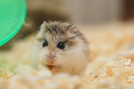

My time during the pandemic actually wasn't too bad. Up until Mother's day I was quarantined with one of my best friends in Charleston, South Carolina. Although we couldn't do too much, we found a dock outside to go swimming in. We bought tubes and would float around in the ocean while listening to music. Besides grabbing groceries, this was the only time we really left our house.
After I went home to my parents I was grateful to be able to spend some time with them that I hadn't had before. Because my workplace had shut down and classes were online, I didn't have anywhere to be besides home with my parents. This was the first time since going to school that I was able to spend that much time with them. We all took turns cooking and ended up spending more time together than ever before.
I love dogs and have always wanted a dog since I was very little. In high school, my mom almost bought one for the family but quickly changed her mind. Then, in college, I was going to get one after I moved out but I quickly realized that I did not have the time or money to care for one. I will definitely get one after school. I'm unsure what breed though.

Cats may be my favorite animal. I had 2 growing up but sadly both have passed. The cat that I basically had for my whole life up until last year taught me a lot. She was extremely sweet and would follow me everywhere around the house and then would stare at me when I left. If I was ever having a sad day, she would cheer me up.

I have a funny story about hamsters. I don't think I would ever purchase one but my friend had to go on a place when Corona first hit. She was looking for someone to take her hamster and had asked me because I wasn't getting on a place to go home. Her hamster was afraid of everything because she also had a cat. Anyways, long story short I lost my friend's hamster.
